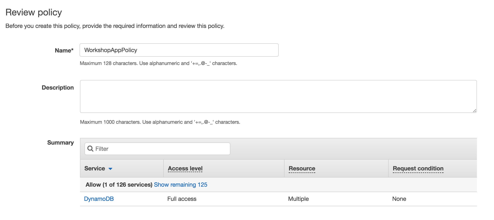
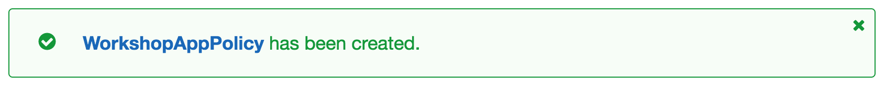
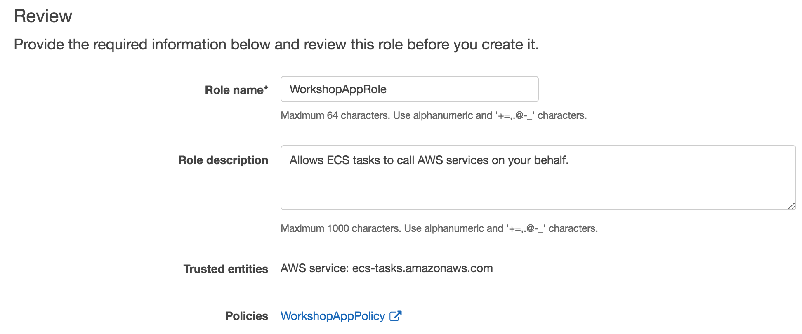
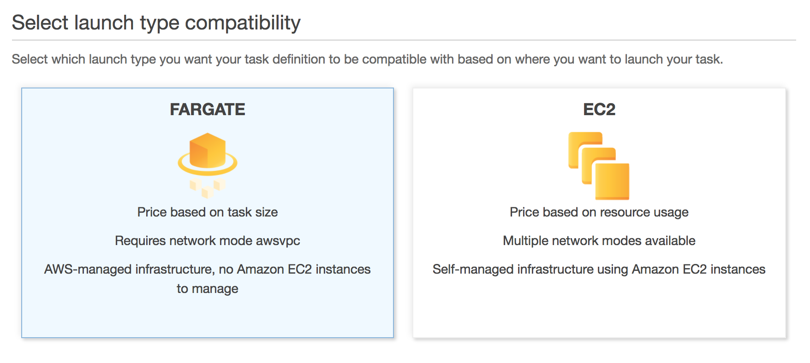
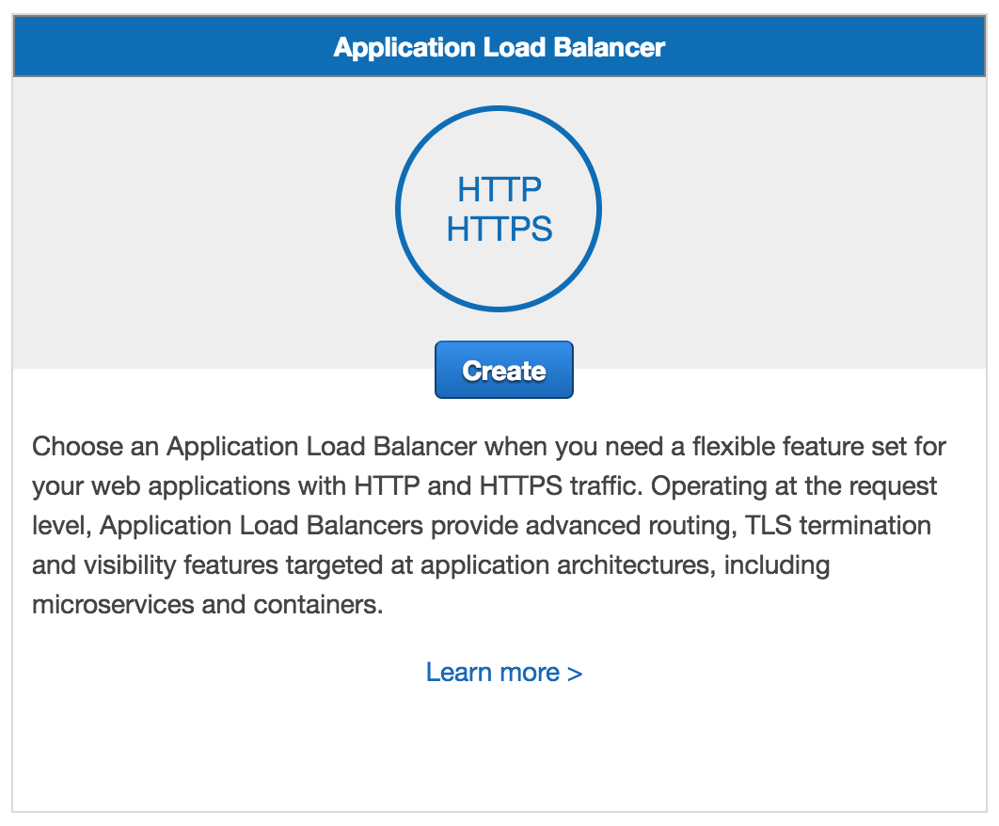
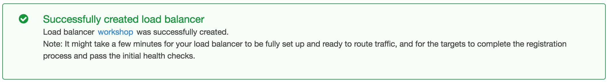
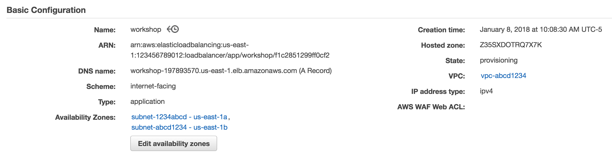

Running Containers on AWS Fargate
Create a Service
In this module we will create a new task definition and service to run the sample application we built in the previous module. To support this service, we'll need to create an AWS Identity and Access Management (AWS IAM) role to allow our application to read from and write to the Amazon DynamoDB table it uses to store quotations. We'll also need to create an Application Load Balancer to distribute traffic across the running tasks that are being ran by the service.
Implementation
1. Create the Task Role
Task roles are IAM roles that can be used by the containers in the task. For our application, we need to grant permission to read from and write to the Amazon DynamoDB table we created in the last module.
✅ Step-by-step Instruction
Go to the AWS Management Console, click Services then select IAM under Security, Identity & Compliance.
Click on Roles in the left-hand navigation.
Click Create role.
First, we'll configure which AWS service can assume this role. Click Elastic Container Service from the Choose the service that will use this role list.
Next, choose Elastic Container Service Task from Select your use case.
Click Next: Permissions.
Click Create policy. The visual policy editor will open in a new tab.
Click on Choose a service and click DynamoDB.
Click on Actions.
Expand the Read permissions and check the Scan and GetItem checkboxes.
Expand the Write permissions and check the PutItem checkbox.
Click Resources to limit the role to the quotes table.
Click Add ARN next to table.
Enter
us-east-1in Region, your Account ID in Account, andquotesin Table name.
Click Add.

This will result in a policy allowing dynamodb:PutItem, dynamodb:Scan, and dyanmodb:GetItem.
{ "Version": "2012-10-17", "Statement": [ { "Effect": "Allow", "Action": [ "dynamodb:PutItem", "dynamodb:GetItem", "dynamodb:Scan" ], "Resource": "arn:aws:dynamodb:us-east-1:123456789012:table/quotes" } ] }Click Review policy.
Enter
WorkshopAppPolicyin Name.Click Create policy.
Return to the original tab where you were creating the role. Click Refresh and type
WorkshopAppPolicyin the Filter textbox. Check the WorkshopAppPolicy checkbox. Click Next: Review.Enter
WorkshopAppRolein Role name.Click Create role.
2. Create the Task Definition
Task definitions are blueprints for your application. They include details about what containers to run, their resource requirements, environment settings, networking configuration, and task role permission settings. In this step, we'll create a task definition for our application. Complete either the directions using the AWS Management Console or the AWS Command Line Interface.
✅ Step-by-step Instructions (AWS Management Console)
Go to the AWS Management Console, click Services then select Elastic Container Service under Compute.
Click Task Definitions in the left-hand navigation.
Click Create new Task Definition.
Click Fargate to select the Fargate launch type.
Click Next step.
Enter
workshopinto Task Definition Name.Select WorkshopAppRole from Task Role.
Select 0.5GB from Task memory (GB).
Select 0.25 vCPU from Task CPU (vCPU).
Click Add container.
Enter
workshopinto Container name.In Image, paste the repository URI for the Docker image you built and pushed in the previous module. For example, if your Account ID was 123456789012, then you'd enter:
123456789012.dkr.ecr.us-east-1.amazonaws.com/workshopEnter
80into Container port and select tcp from Protocol in Port mappings.Click Add.
Click Create.
✅ Step-by-step Instructions (AWS CLI)
Switch to the tab where you have your Cloud9 environment opened.
Open the file
fargate-workshop-app/ecs/workshop.jsonby navigating to it in the environment tree and double clicking the filename.The file has the following contents:
{ "family": "workshop", "requiresCompatibilities": ["FARGATE"], "cpu": "256", "memory": "512", "networkMode": "awsvpc", "taskRoleArn": "arn:aws:iam::YOUR_ACCOUNT_ID_HERE:role/WorkshopAppRole", "executionRoleArn": "arn:aws:iam::YOUR_ACCOUNT_ID_HERE:role/ecsTaskExecutionRole", "containerDefinitions": [ { "name": "workshop", "image": "YOUR_ACCOUNT_ID_HERE.dkr.ecr.us-east-1.amazonaws.com/workshop", "essential": true, "logConfiguration": { "logDriver": "awslogs", "options": { "awslogs-group": "/ecs/workshop", "awslogs-region": "us-east-1", "awslogs-stream-prefix": "ecs" } }, "portMappings": [ { "protocol": "tcp", "containerPort": 80 } ] } ] }Replace the YOUR_ACCOUNT_ID_HERE placeholders with your Account ID. Save the file by going to File and selecting Save in the menu bar, or pressing ⌘-S (macOS) / Ctrl-S (Windows).
Create a new task definition from the JSON file by running this command in your Cloud9 terminal:
aws ecs register-task-definition --cli-input-json file://~/environment/fargate-workshop-app/ecs/workshop.jsonCreate the CloudWatch Logs log group
/ecs/workshopconfigured in your new task definition by running this command in your Cloud9 terminal:aws logs create-log-group --log-group-name /ecs/workshop
3. Create an Application Load Balancer
✅ Step-by-step Instructions
Go to the AWS Management Console, click Services then select EC2 under Compute.
Click on Load Balancers in the left-hand navigation.
Click Create Load Balancer.
In Application Load Balancer, click Create.
Enter
workshopinto Name.Select the VPC created in the first module when you created the ECS cluster in the first module. If you need to find the VPC ID do one of the following:
AWS Management Console
Click on Services, right-click on VPC under Networking & Content Delivery and click Open Link in New Tab.
Click on Your VPCs in the left-hand navigation.
Click on each VPC, and click on its Tags tab. The VPC you're looking for has a tag with Key
aws:cloudformation:stack-nameand ValueEC2ContainerService-workshop
AWS CLI
Run the following command in your Cloud9 terminal:
aws ec2 describe-vpcs --query Vpcs[0].VpcId --output text \ --filters Name=tag:aws:cloudformation:stack-name,Values=EC2ContainerService-workshop
Select all Availability Zones configured for the VPC by checking each checkbox.
Click Next: Configure Security Settings.
The wizard will warn you that you've not established a secure listener as we didn't define an HTTPS listener. Click Next: Configure Security Groups.
Tick the Create a new security group radio button. This will create a new security group which will permit traffic to port 80 by default.
Click Next: Configure Routing.
Enter
workshopinto Name.Enter
80into Port.Select ip from Target type.
Click Next: Register Targets. We won't register anything as we'll rely on Amazon ECS to manage our Target Group for us.
Click Next: Review. Review the details you configured, then click Create.
Click on the workshop link to view details about the new load balancer.
Click on the workshop link to view details about the new load balancer.
Take note of the DNSName. This will be the hostname of our load balancer that we'll use to hit our service after we complete the next set of steps.
4. Create the Service
Services maintain a desired number of tasks and manage registration of those tasks with a load balancer. In this section, we'll create a new service for our Docker container.
✅ Step-by-step Instructions (AWS Management Console)
Go to the AWS Management Console, click Services then select Elastic Container Service under Compute.
Click workshop in the cluster list.
The Services tab should be selected. Click Create.
Tick the FARGATE radio button in Launch Type.
Select workshop:1 from Task Definition.
Enter
workshopinto Service name.Enter
1into Number of tasks.Click Next step.
Select the VPC created in the first module when you created the ECS cluster in the first module. If you need to find the VPC ID do one of the following:
AWS Management Console
Click on Services, right-click on VPC under Networking & Content Delivery and click Open Link in New Tab.
Click on Your VPCs in the left-hand navigation.
Click on each VPC, and click on its Tags tab. The VPC you're looking for has a tag with Key
aws:cloudformation:stack-nameand ValueEC2ContainerService-workshop
AWS CLI
Run the following command in your Cloud9 terminal:
aws ec2 describe-vpcs --query Vpcs[0].VpcId --output text \ --filters Name=tag:aws:cloudformation:stack-name,Values=EC2ContainerService-workshop
Select both subnets in Subnets.
Under Load Balancing, tick the Application Load Balancer radio button.
⭐ Recap
üîë
üõ†Ô∏è
Next
✅